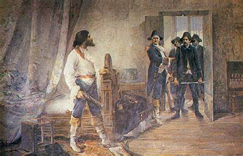

No século XVIII, o Brasil era uma colônia portuguesa e passava por um intenso ciclo de exploração do ouro, especialmente em Minas Gerais. A Coroa Portuguesa impunha altos impostos, como o quinto, que obrigava os mineradores a entregar 20% do ouro extraído, e a derrama, uma cobrança forçada caso a arrecadação não atingisse a meta. Esse sistema gerava descontentamento entre a população, principalmente entre a elite local, composta por fazendeiros, intelectuais e militares, que desejavam maior autonomia.
Joaquim José da Silva Xavier, conhecido como Tiradentes, nasceu em 1746, em Minas Gerais. Ele teve diversas ocupações, atuando como dentista (daí o apelido), tropeiro, comerciante e alferes (posto militar equivalente a um tenente). Tiradentes foi influenciado pelas ideias iluministas e pela independência dos Estados Unidos, acreditando que Minas Gerais poderia se tornar uma república independente de Portugal.
A Inconfidência Mineira foi uma conspiração organizada entre 1788 e 1789 para libertar Minas Gerais do domínio português. Os inconfidentes pretendiam criar um governo republicano, reduzir impostos e incentivar a produção local. O movimento, porém, não chegou a ser concretizado, pois foi denunciado por Joaquim Silvério dos Reis, um dos participantes, que traiu os companheiros em troca do perdão de suas dívidas com a Coroa.
Após a denúncia, os conspiradores foram presos e levados ao Rio de Janeiro. O julgamento durou três anos e resultou em penas diferentes para cada um dos envolvidos. Alguns foram exilados na África, enquanto Tiradentes assumiu toda a responsabilidade pelo movimento, tornando-se o único condenado à morte.
Em 21 de abril de 1792, Tiradentes foi enforcado e esquartejado no Rio de Janeiro. Suas partes foram expostas em Minas Gerais como um aviso contra qualquer tentativa de rebelião. Com o tempo, sua imagem passou de traidor a herói nacional, especialmente após a independência do Brasil. Hoje, Tiradentes é reconhecido como um dos maiores símbolos da luta pela liberdade, e o dia de sua morte é feriado nacional.

Tiradentes, cujo nome verdadeiro era Joaquim José da Silva Xavier, foi um dos principais líderes da Inconfidência Mineira, movimento que buscava a independência do Brasil do domínio português ainda no século XVIII. Mesmo sem alcançar o sucesso em vida, Tiradentes teve um papel fundamental na história brasileira, sendo um dos primeiros a defender abertamente a libertação do país. Inspirado pelas ideias iluministas e pelos ideais da Revolução Francesa, ele difundiu conceitos de liberdade, igualdade e justiça, influenciando a população a questionar o poder absoluto da Coroa portuguesa. Após ser preso e executado em 1792, Tiradentes se tornou mártir da independência e símbolo de resistência contra a opressão. Sua memória foi resgatada anos depois e serviu de inspiração para movimentos republicanos, inclusive para a Proclamação da República em 1889. Hoje, ele é considerado um herói nacional, e o dia de sua morte, 21 de abril, foi transformado em feriado nacional em sua homenagem.
Tiradentes foi homenageado diversas vezes pelo governo brasileiro através da emissão de moedas e cédulas. Uma das mais famosas representações foi na nota de 5 mil cruzeiros, que circulou entre os anos 1980 e 1990. Nessa cédula, o rosto de Tiradentes aparece com cabelo e barba longos, lembrando uma figura quase religiosa, como um mártir — reforçando a ideia de que ele morreu por um ideal de liberdade. Além disso, o rosto de Tiradentes também já apareceu em moedas comemorativas, especialmente em datas importantes, como os 100 anos da Proclamação da República. Essas homenagens mostram como ele se tornou um símbolo nacional, associado à luta pela liberdade e à construção da identidade brasileira.